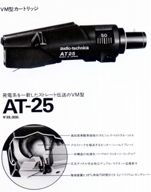
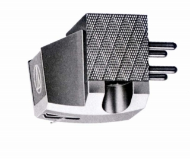
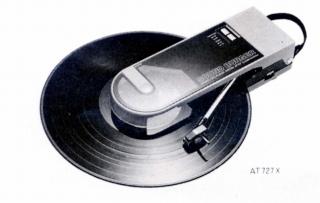
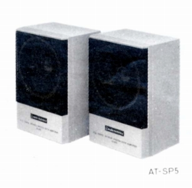
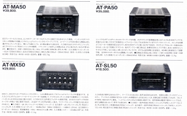
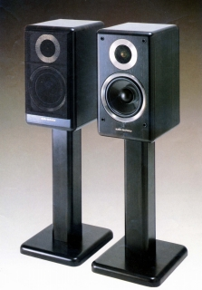
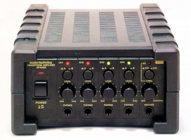

オーディオ・テクニカ カタログギャラリー
(カタログ画像をクリックすると原寸大のPDFファイルが開きます）
�@AT-700シリーズカタログ
最初のヘッドフォンシリーズの為か、単独でカタログを作成していた。
なお、AT-706単体のカタログも存在する。
�A1976.4月版総合カタログ
メインはカートリッジだが、表紙ではヘッドフォンが大きくフューチャーされている。
�B1977.12版総合カタログ
ヘッドフォンが第2世代に切替後の総合カタログ。
�C1978.10版総合カタログ 
（当時のＶＭ型最高機種のAT-25。当時はシェル一体型が流行していた）
�D1980.10ヘッドフォンカタログ
ソニーのMDR-3等に触発された「ポイントシリーズ」が表紙を飾っている。
この後しばらく縦長の形式のカタログが続く。
�E1981.7版総合カタログ
�F1981.10版総合カタログ
メインはまだまだカートリッジ。アナログディスク時代後期の超高級カートリッジが出始めている。

（当時で20万円したAT-1000)
�G1982.3版総合カタログ
1981.7版と同一デザイン。
�H1982-83海外版総合カタログ
�I1983.6版総合カタログ
�J1983.11版総合カタログ
ここでカタログの形が正方形となった。1987年末までこのスタイルが続く。
 
（左がポータブルアナログプレイヤー、通称「サウンドバーガー」 右はアンプ内蔵のミニスピーカー。エレガも末期に同じような製品を出してした）
�K1984.5版総合カタログ
1986年にCDとアナログディスクの生産量が逆転したと思う。そうした意味でアナラグディスク時代晩期のカタログ。
�L1985.10版総合カタログ
表紙からカートリッジ以外が消えた、アナログ/デジタル端境期のカタログ。
�M1986.11版総合カタログ
�N1987.4版総合カタログ
CDとアナログディスクの生産量が逆転した後のカタログ。先頭はまだカートリッジだがいろいろ模索していた時代。

（1988年12月版では先頭に記載されるCOMPO LIVE HOUSEシリーズ。後に純粋なステレオアンプやチューナーも追加された）
�O1987.10版総合カタログ
1987年4月版と色違いのカタログ。ヘッドフォンとアクセサリーの位置が入れ替わった。
�P1988.12版総合カタログ
ついにカートリッジが末尾に回されたカタログ。以降しばらくこのデザインのカタログが続く。1991年頃に総合カタログからヘッドフォン単独のカタログになったようだ。

（テクニカが本格的オーディオ用スピーカーに挑戦したAT-SP500。後継モデルはでなかった。）
�Q1991.11版ヘッドフォンカタログ
ヘッドフォン単独でのカタログ。テクニカは最初のAT-700シリーズから1980年代初頭までは「ヘッドホン」と表記していたが、この時代はなぜか「ヘッドフォン」と表記している。

（かつてのCOMPO LIVE HOUSEシリーズのボディを流用したヘッドフォンアンプAT-HA50）
�R1993.5版業務用総合カタログ
カラー画像はないが、スペックは一般向けより詳しく記載されていた。
�S1998.6版ヘッドフォンカタログ
この時代にはアートモニターシリーズやＷ（ウッド）シリーズが始まっている。
2000.10版ヘッドフォンカタログ
ADシリーズが表紙のカタログ。